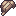

Gua Kristal
| Rentang level | Lv 15–22 |
|---|---|
| Tema | Gua dengan kristal mana bercahaya dan urat tembaga yang menjuntai dari langit-langit. |
| Elemen | Tanah Petir |
| Batu elemen | Batu Tanah |
| Bahaya | Gelap |
| Stasiun bawaan | Landasan Rune di pintu masuk gua |
| Tersambung ke | Hutan, Puncak Badai |